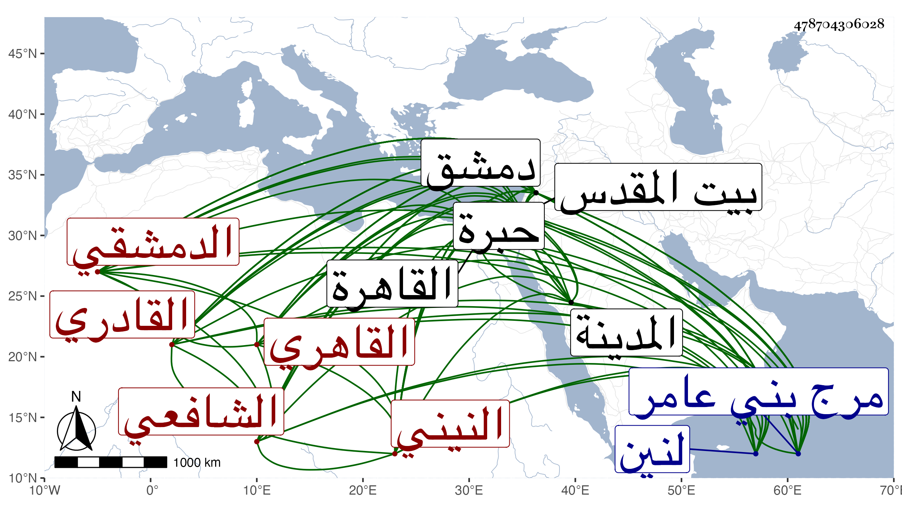

0902Sakhawi.DawLamic.ITO20230111-ara1.EIS1600.478704306028
Biography ID: 478704306028
إبراهيم بن محمد بن إبراهيم بن صالح برهان الدين النيني بفتح النون المشددة ثم تحتانية ساكنة بعدها نون نسبة لنين من أعمال مرج بني عامر من نواحي دمشق الدمشقي ثم القاهري الشافعي القادري ويعرف بالبرهان القادري . ولد تقريبا في سنة ثلاث عشرة وثمانمائة بنين وتحول منها إلى دمشق مع أبويه وكان أبوه من أهل القرآن فقرأ بها القرآن على الشمس بن المكاري بقبر عاتكة وصلى به بجامع التوبة من العقيبة الكبرى بدمشق وحفظ كتبا جمة وهي العمدة وعقيدة الغزالي والشاطبية وأرجوزة العز الديريني في الفرق بين الضاد والطاء وألفية الحديث والنحو والجرومية والحدود للأبدي والمنهاج الأصلي والفرعي وآداب ما يتكرر في اليوم والليلة من الأكل والشرب والدعاء والنوم من نظم ابن العماد في أربعمائة بيت وقصيدة ابن المقري التي أولها :
| إلى كم تماد في غرور وغفلة | وكم هكذا نوم إلى غير يقظة |
والبردة للبوصيري ومختصر منهاج العابدين للبلاطنسي وكتاب ابن دقيق العيد لنائبه باخميم القاضي مخلص الدين وعرض على جماعة منهم الجلال البلقيني حين اجتيازه عليهم بدمشق والشمس البرماوي حين إقامته عندهم بها والتقي بن قاضي شهبة وعنه أخذ في الفقه وكذا عن البلاطنسي وسمع ابن ناصر الدين وقدم القاهرة فلازم المناوي أتم ملازمة في الفقه تقسيما وغيره وكذا أخذ عنه العربية والأصول بل لازم تلميذه الجوجري وكتب عن شيخنا في الأمالي وسمع ختم البخاري في الظاهرية القديمة وقرأ شرح ألفية العراقي على الديمي وصحب السيد علي القادري والد عبد القادر وحج في سنة إحدى وأربعين وغيرها وزار المدينة وبيت المقدس والخليل وتردد للجمالي ناظر الخاص واختص به وقتا وربما أجريت على يديه بعض مبراته وكذا تردد من الرؤساء كل ذلك على وجه السداد والاستقامة ولين الكلمة والتودد والتواضع والرغبة في الفائدة وقد استفتاني وحضر عندي في بعض دروس الألفية وحافظته أحسن من فاهمته ولم يزل يكرر على محافيظه . مات في ليلة السبت سادس عشر شوال سنة ست وثمانين رحمه الله وإيانا .
